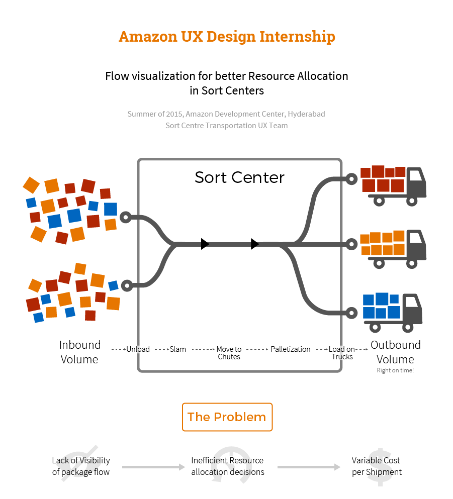
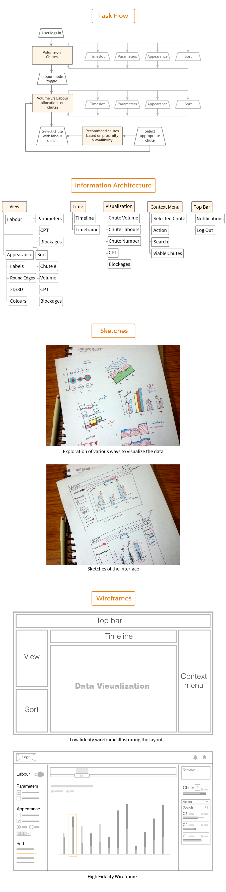
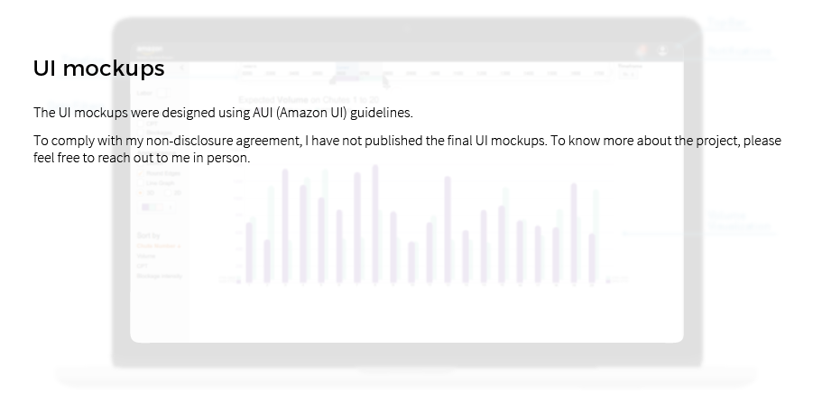

Brief
The project was carried out as a part of my summer internship at Amazon Development Center, Hyderabad office.
Sort Centers at Amazon are responsible for sorting the packages, palletizing them and loading them to their corresponding trucks. However, the current systems rely on excel sheets to represent data in tabular form only. I was responsible for visualizing the flow of packages within the facility in order to facilitate managers to make better resource (labour) allocation decisions. Currently sort center managers use manual sheets to allocate labours. I addressed the problem by designing an interface that would enable managers to see and reallocate labour allocation within the facility.
I followed "The Amazon User Centred Design Process". I began by understanding and evaluating the current existing system. I conducted stakeholder interviews, created a persona of the user, identified pain points and set user goals.
I created scenarios, conducted task analysis, made paper prototypes and then I began with wireframing and explored possible ways of visualizing the data. I was given constant feedback by my manager and mentor via weekly meetings. Based upon the feedback, I created iterations.
I delivered high fidelity UI mockups and a UX specification sheet at the end of my internship. The project is an ongoing project. Working at Amazon was a unique learning experience that helped me understand better about how the industry works.

What sort centres do? They sort, of course. Packages from fulfilment centres reach the sort centres. Sort centres palletize (group) the packages based upon where they are headed and other factors like the urgency of the packages. These pallets are then loaded on various trucks which are headed to the destination of the packages.
Unloading packages, Palletizing, Loading them requires labours in a sort centre. The labours are allotted by sort center managers based upon the real time volume distribution.
The problem with the current system was that the managers don’t have a visibility on the upcoming package flow within the facility. They act in real time while making labour allocation decisions which often leads to inefficient resource allocation decisions leading to increased costs.
I followed "The Amazon User Centred Design Process". I started with a brief that was given to me. It discussed about the problems with the current sort center management system. I went through various documents related to the projects, videos of sort centres to understand the current system. After understanding and evaluating the current existing systems, I conducted stakeholder interviews, created a persona of the user, identified pain points and set user goals. I created scenarios, user flows and then diverged to explore different possibilities on how the data could be visualized through paper prototypes. After shortlisting a few ideas, I rendered them on Illustrator. I discussed the ideas, sketches and the renditions with my manager, mentor and team mates and did refinements.
Currently Sort Center managers rely on manual spreadsheets and can’t see if there is going to be an increase or decrease in the number of packages on a chute in the upcoming timeslots. The managers have to look at a lot of digits and rely on their previous experience while making reallocation decisions.
The system should be able to show the managers a visualization of the data but should also be able to show numbers when needed. As the manager does any reallocations, he should get suggestions but should be able to override them.

I made a lot of sketches to explore possibilities of visualizing the data and some paper prototypes of the interface. This was followed by wireframing on Illustrator wherein initially a layout with placeholders was made. This was followed by High fidelity wireframing. The system allows the user to view and compare the volumes in different timeslots. The user can allocate labours through the system. The user can also customise how the data is presented and what data is presented to him.

The typography, colours, visual elements and their arrangement were chosen to keep the interface compliant with AUI - Amazon’s User Interface Guidelines. Other factors like technological feasibility based upon feedback from the tech team also influenced the design.
May '15 - July '15
Mr. Sumit Dey, UX Lead, Amazon
Interaction Design, Data Visualization